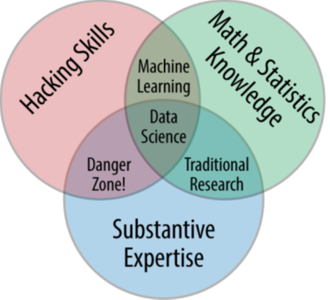

Interdisciplinaridad de la Ciencia de datos
La ciencia de datos es un campo inherentemente interdisciplinario. El aumento de Data Science está directamente relacionado con el aumento de grandes conjuntos de datos en casi todos los dominios de temas. Las ciencias, las ciencias sociales, los negocios, las humanidades y la ingeniería están viendo oportunidades de descubrimiento y toma de decisiones ampliadas por cantidades sin precedentes de datos en bruto o estructurados. Los datos son demasiado grandes para permitir un análisis humano efectivo sin la automatización de los procesos. Data Science es el campo que reúne datos de dominio, ciencias de la computación y las herramientas estadísticas para interrogar los datos y extraer información útil.
La ciencia de datos requiere la integración efectiva de un dominio para proporcionar datos y un contexto para su exploración, estadísticas y la ciencias de la computación. Los expertos en dominios entienden sus datos y quizás sepan qué pueden esperar aprender de los datos. Quieren herramientas y técnicas para hacer el trabajo. Necesitan saber lo suficiente sobre las herramientas y técnicas para estar seguros de que los resultados serán confiables.

Drew Conway’s Data Science Venn Diagram
Cada componente del entorno de Data Science: el dominio que proporciona los datos; estadísticas para análisis, modelado e inferencia; y la ciencia de la computación para el acceso a los datos, la gestión, la protección, así como el procesamiento efectivo en arquitecturas informáticas modernas, son esenciales. Sin embargo, una colección aleatoria de los tres elementos no constituye un programa significativo de ciencia de datos. La ciencia de datos es interdisciplinaria y requiere la integración efectiva de los tres componentes para producir resultados significativos.
El verdadero trabajo interdisciplinario es desafiante. Cuando se trata de un tema verdaderamente interdisciplinario, el objetivo debe ser ver el nuevo todo que se compone de contribuciones de cada parte. No es posible incluir todo de cada parte, pero ese no es el punto. El punto es definir algo nuevo que tome partes importantes de cada contribuyente.